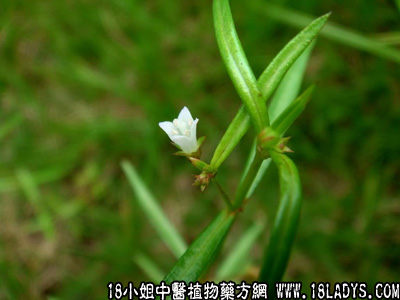

(本文解释权归中药材天地网兄弟站-18小姐中医植物药方网所有,如需转载请注明出处)

别名：甲猛草、二叶葎、了哥痢、千打锤、羊须草、蛇舌黄、蛇草、茜草。
生长环境：生于低洼田基等湿地，其叶如蛇舌，开白花、花谢后，结成小球，其嫩者无球,亦可以药用。此种药植物有十多种不同的形态，入药只采用一种矮脚而叶较大、油一些的，其高脚而叶较细窄的未有采用。
分布：广东、广西、云南、福建等南方各省。
采集期：夏，秋。
入药部分：全株、连根。
性味：性寒、味微酸。
功能：能清血热、消风散气、解毒退肿、止痛。
主治：肺热、肠热、大肠积热、喉痛、疮肿、蛇疮。据民间传说，并能治疗各种癌症（未有临床经验）、一切肠痛、阑尾炎（即盲肠炎）有特效果，用量2至4两。
参考资料：按《中国药物植物志》第七册348图，以及《广州植物志》502页记载：治阑尾炎（即盲肠炎）及一切肠病有效。
《药检工作通讯》502页记载：1、治肠及阑尾炎有特效；2、外科生瓜（即患流注）、生蛇（即疔疮也称蛇头疔）、蛇咬伤均有效。
《潮安县民间草药》记载，效能：清热、退肿、止痛。入脾肺经，主治肠热、喉痛、肠痛、大热积热、疮肿、蛇咬。
福建省《同安药材》第一集65页记载：此药近年来有用以治各种癌症，用全株鲜草12两或干草4两，配以白鲜矛根4两或干2两，红糖2两，用八碗水煎成一碗，一天服一次，入服后有反应呕吐现象可暂停三天再服。（按南洋等地华侨亦有采取此方治癌，多用鲜草。）
近年来亦有采用半枝莲一两、白花蛇舌草2两，用5磅水、慢火煎成一磅作茶喝，一天喝多次，长期喝，用以治癌症。
亦有采取上列福建《同安药材》处方、加铁树叶一两，八月扎一两，以治癌症。
按癌症有多种，症状非常复杂，世界医学上认为极其棘手的恶症，至今还是未有把握防治、或根治，关于用白花蛇舌草、半枝莲等药用以治癌，只是民间采用，疗效并不显著，大约鼻咽癌、肠癌，初期症可以抑制作用；如属后期症则难以见效。
(本文解释权归中药材天地网兄弟站-18小姐中医植物药方网所有,如需转载请注明出处)